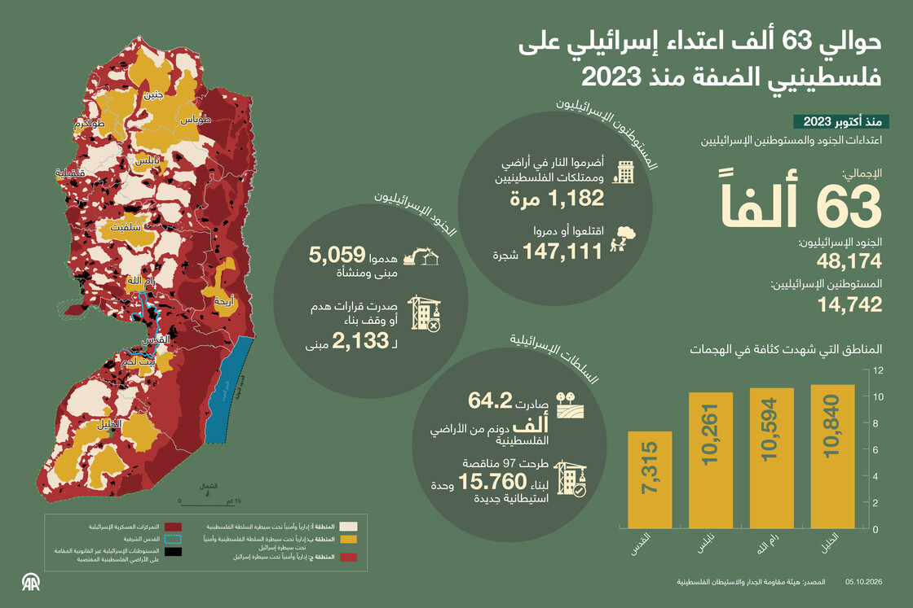

بعد ثلاثة أعوام من التصعيد الإسرائيلي، لم تعد تداعياته في الضفة الغربية المحتلة تقتصر على القتل والاعتقال والهدم، بل امتدت إلى تفاصيل الحياة اليومية للفلسطينيين، من التنقل والتعليم والوصول إلى الخدمات، وصولًا إلى العمل في الأراضي الزراعية والبقاء في المنازل والمخيمات.
وتظهر أحدث المعطيات أن هذا الواقع لم يعد مرتبطًا بحوادث منفصلة، بل بات يطال مساحات واسعة من الضفة، عبر منظومة من العمليات العسكرية والقيود على الحركة وإرهاب المستوطنين والهدم والتهجير والاستيلاء على الأراضي.
وقالت هيئة مقاومة الجدار والاستيطان، في تقرير نشرته في 4 أكتوبر/ تشرين الأول الجاري، إن القوات الإسرائيلية والمستوطنين نفذوا 62 ألفا و916 اعتداءً بحق الفلسطينيين وأراضيهم وممتلكاتهم في الضفة، بما فيها القدس، منذ 7 أكتوبر/ تشرين الأول 2023، بينها 48 ألفا و174 اعتداء نفذتها القوات الإسرائيلية و 14 ألفا و742 للمستوطنين.
وسجلت الهيئة 66 فلسطينيًا قتلوا جراء اعتداءات المستوطنين، وألف و182 حريقًا استهدف الممتلكات والأراضي، فيما طالت الاعتداءات 147 ألفا و111 شجرة، بينها 100 ألف و485 شجرة زيتون، إضافة إلى 922 حالة تجريف للأراضي وألفين و645 اعتداء على الأشجار والمزروعات.

لكن أحد أبرز مظاهر التغيير الذي طرأ على حياة الفلسطينيين خلال السنوات الثلاث ظهر في شمالي الضفة، حيث تحولت ثلاثة مخيمات للاجئين إلى مناطق مهجورة إلى حد كبير، بعد تهجير سكانها ومنعهم من العودة.
وقالت مفوضية الأمم المتحدة السامية لحقوق الإنسان، في تقرير نشرته في 4 سبتمبر/ أيلول الماضي، إن القوات الإسرائيلية هجّرت قسرًا جميع سكان مخيمات جنين ونور شمس وطولكرم خلال يناير/ كانون الثاني وفبراير/ شباط 2025، وما زالت تمنع عودتهم.
ووفق التقرير الأممي، دُمر أو تضرر حتى أكتوبر/ تشرين الأول 2025 نحو 52 بالمئة من مباني مخيم جنين، و48 بالمئة من مباني مخيم نور شمس، و36 بالمئة من مباني مخيم طولكرم.
ولم يتوقف أثر التهجير عند فقدان المساكن، إذ طالت الأضرار الطرق والبنية التحتية وشبكات المياه والكهرباء، بينما انعكس استمرار عدم قدرة السكان على العودة على التعليم أيضًا.
وقال مكتب الأمم المتحدة لتنسيق الشؤون الإنسانية "أوتشا"، في تقرير نشره في 11 سبتمبر، إن أكثر من 4 آلاف طالب هُجروا من مخيمات اللاجئين في شمالي الضفة تعطلت دراستهم المنتظمة، فيما بقيت أربعة مبانٍ مدرسية تابعة للأونروا في مخيم جنين غير متاحة، ونحو ألف و600 طالب يدرسون مؤقتًا في أماكن بديلة.
كما تعذر الوصول إلى مبنيين مدرسيين في مخيم نور شمس، فيما تستقبل أربعة مبانٍ مدرسية تابعة للأونروا قرب مخيم طولكرم نحو ألفين و300 طالب من ست مدارس في مخيمي طولكرم ونور شمس.
وبالتوازي مع ذلك، توسعت منظومة الحواجز والإغلاقات التي تقيد حركة الفلسطينيين بين المدن والبلدات والقرى.
وفي 25 سبتمبر، قالت هيئة مقاومة الجدار والاستيطان إن الضفة الغربية تضم 942 حاجزًا وعائقًا عسكريًا، بينها 824 حاجزًا ونقطة إغلاق ثابتة و118 عائقًا خطيًا من سواتر وخنادق وحواجز طرق، في وقت رصدت فيه الهيئة 13 حاجزًا وبوابة ثابتة جديدة خلال الشهرين السابقين للتقرير.
وتحولت هذه القيود إلى جزء من الحياة اليومية، إذ تؤثر في الوصول إلى العمل والمدارس والمرافق الصحية والأراضي الزراعية، وتزيد صعوبة التنقل بين التجمعات الفلسطينية.
وتظهر آثار ذلك بصورة خاصة في موسم الزيتون الحالي، حيث بات الوصول إلى الأرض بالنسبة إلى مزارعين فلسطينيين مرتبطًا بقيود الجيش واعتداءات المستوطنين.
وقال المزارع إسماعيل أبو الشيخ من بلدة بيتا إن موسم جني الزيتون تحول بالنسبة للمزارعين إلى "موسم خطير" في ظل اعتداءات المستوطنين وقيود الوصول إلى الأراضي.
وأوضح للأناضول أن موسم الزيتون يمثل مصدر رزق مهمًا لكثير من العائلات، إلا أن الاعتداءات تحول دون تمكن المزارعين من استكمال قطف الثمار.
وأضاف: "كنا نفرح بحلول الموسم وننتظره بشوق، أما اليوم فنخاف على حياتنا وحياة عائلاتنا وأبنائنا".
ومن جهته، قال المزارع صقر الجبالي إن الجيش الإسرائيلي أجبر المزارعين على مغادرة المنطقة تحت التهديد وبإطلاق قنابل غاز مسيل للدموع، رغم وجود ناشطين أجانب لمساندتهم.
وأضاف الجبالي للأناضول أن إنتاج زيت الزيتون هذا العام قد لا يتجاوز 20 بالمئة، في ظل استمرار منع المزارعين من الوصول إلى أراضيهم واعتداءات المستوطنين.
وتشير بيانات "أوتشا" إلى أن هذه الاعتداءات لم تعد محصورة في أضرار مباشرة، بل باتت تفرض آثارًا تراكمية على المجتمعات الفلسطينية.
وحتى 14 سبتمبر/ أيلول الماضي، وثق المكتب أكثر من ألف و600 اعتداء للمستوطنين منذ بداية 2026، طالت 275 تجمعًا فلسطينيًا، بمعدل 6.7 اعتداء يوميًا، مقابل خمسة يوميًا خلال 2025.
وقال المكتب إن اعتداءات المستوطنين والقيود المرتبطة بها أدت إلى عزل تجمعات لفترات طويلة وتقليص قدرة سكانها على الوصول إلى منازلهم وأراضيهم الزراعية والخدمات الأساسية.
كما تواصلت عمليات الهدم والتهجير، ووفق "أوتشا"، هُجر أكثر من 4 آلاف و 300 فلسطيني في الضفة خلال 2026 نتيجة عمليات الهدم والإخلاء واعتداءات المستوطنين والقيود المرتبطة بها حتى منتصف سبتمبر، وشكلت اعتداءات المستوطنين والقيود المرتبطة بها نحو 60 بالمئة من حالات التهجير.
وخلال أسبوع واحد فقط في سبتمبر، هدمت السلطات الإسرائيلية 86 مبنى فلسطينيًا وأجبرت أسرة على هدم منزلها، ما أدى إلى تهجير 147 فلسطينيًا، بينهم 73 طفلًا، بحسب تقرير "أوتشا" الصادر في 25 سبتمبر.
امتدت تداعيات السنوات الثلاث إلى الاعتقال، إذ بلغ عدد الأسرى والمعتقلين في السجون الإسرائيلية نحو 9 آلاف و 300 حتى 5 أكتوبر الجاري.
وذكر بيان مشترك لنادي الأسير الفلسطيني، ومؤسسة الضمير (غير حكوميين)، وهيئة شؤون الأسرى (حكومية)، بمناسبة مرور ثلاثة أعوام على حرب الإبادة الإسرائيلية على قطاع غزة أنه تم توثيق مقتل 92 أسيرا فلسطينيا في السجون الإسرائيلية خلال السنوات الثلاث الأخيرة، فيما تجاوزت الاعتقالات في الضفة الغربية بما فيها القدس 26 ألف حالة منذ 7 أكتوبر/تشرين الأول 2023.
وأضافت أن مصير العشرات من معتقلي قطاع غزة الذين قتلوا لا يزال مجهولا، فيما تواصل إسرائيل احتجاز جثامين 100 أسير ممن قتلوا قبل الحرب وبعدها.
وأشارت إلى أن الاعتقالات خلال السنوات الثلاث الماضية ارتبطت بممارسات تشمل التعذيب والتجويع والحرمان من العلاج والاعتداءات الجسدية والجنسية، وصولا إلى القتل البطيء والمباشر، وفق الورقة.
وبحسب الورقة، تعرض أكثر من 2000 طفل و800 امرأة للاعتقال والاحتجاز في الضفة الغربية منذ بدء الحرب، فيما يقبع أكثر من 9300 أسير في السجون الإسرائيلية.
وبينت المؤسسات أن من بين الأسرى 3101 معتقل إداري و1419 معتقلا تصنفهم إسرائيل ضمن ما تسميهم "المقاتلين غير الشرعيين"، معتبرة أن الاعتقال الإداري المسجل منذ بدء الحرب بلغ مستويات هي الأعلى تاريخيا، وتحول من إجراء استثنائي إلى سياسة واسعة للاحتجاز دون توجيه تهمة واضحة أو محاكمة.
وهكذا، لا تختصر السنوات الثلاث في ارتفاع حصيلة الاعتداءات، وإنما تظهر آثارها في تفاصيل الحياة اليومية: مخيمات أُفرغ سكانها منها ولم يتمكنوا من العودة، وطلاب يدرسون خارج مدارسهم، وطرق وحواجز تعيد تشكيل حركة الناس، ومزارعون يخشون الوصول إلى أراضيهم، وأسر تفقد مساكنها ومصادر رزقها.
وبينما تستمر هذه الوقائع، تظهر المعطيات الميدانية أن الضفة الغربية دخلت خلال السنوات الثلاث واقعا أكثر تعقيدًا، تتداخل فيه القيود على الحركة مع الهدم والتهجير واعتداءات المستوطنين والعمليات العسكرية، بما يؤثر بصورة مباشرة في قدرة الفلسطينيين على الوصول إلى الأرض والعمل والتعليم والخدمات، وعلى الاستقرار في مناطقهم.